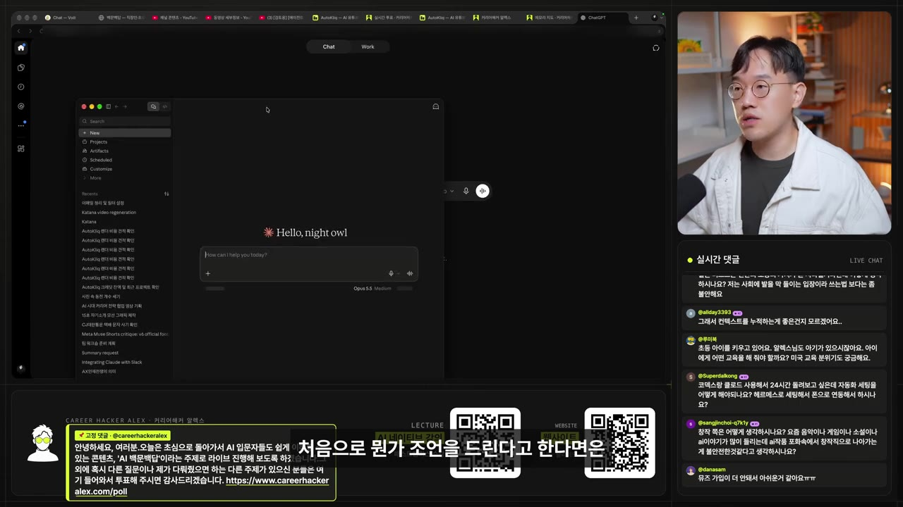
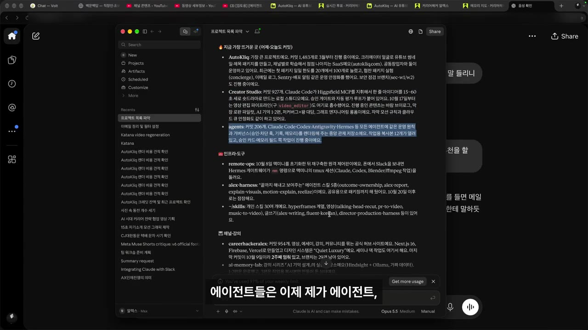
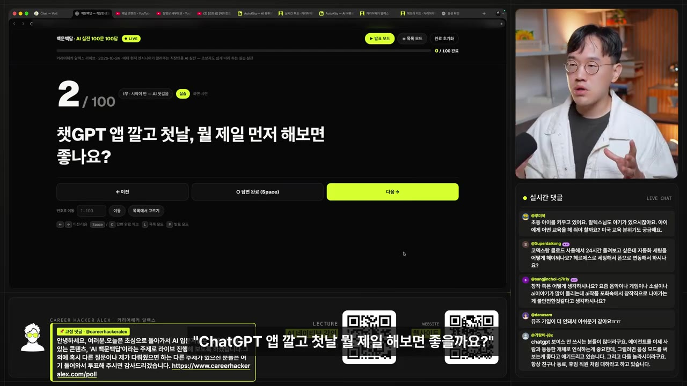
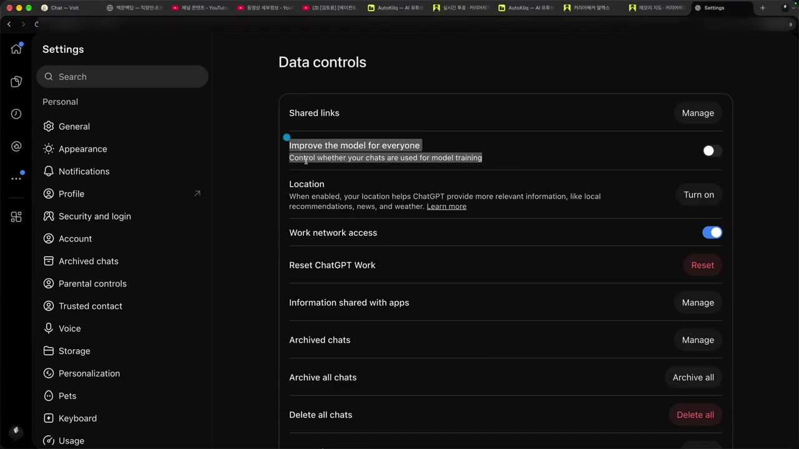

늦게 시작한 초보에게 필요한 건 실력보다 첫 대화입니다
▶ 원본 영상 보기한눈에 보기
- AI를 처음 쓴다면 ChatGPT 음성 모드로 말 걸기부터 시작하고, 조금 익숙해지면 Claude 데스크톱 앱에 "내 컴퓨터를 보고 나를 파악해 줘"라고 시켜 보라고 권한다.
- AI가 나를 알아야 답이 좋아진다. 그래서 첫날 할 일은 기능 공부가 아니라 "나에 대해 말하기"다.
- 무료로 충분히 시작할 수 있고, 늦게 시작해도 따라잡을 수 있다. 실력 차이는 시작 시점보다 AI를 얼마나 믿고 쓰느냐에서 난다는 주장이다.
- AI 거짓말은 "자료에 근거해 답하라"고 요구하거나 다른 AI에게 검증시켜 거른다. 회사 일에 쓸 때는 대화가 모델 학습에 쓰이지 않도록 설정을 끈다.
- 하루 30분, AI에게 질문하고 AI가 나에게 질문하게 하는 것만 반복해도 한 달 뒤 실력이 붙는다.
이런 분께 도움이 됩니다
- 코딩·영어에 자신이 없어 AI를 어디서부터 시작할지 모르는 분, 주변보다 늦었다고 느끼는 분.
- 첫날 던질 질문, 무료·유료 판단 기준, 회사 일에 쓰기 전 꺼야 할 설정을 바로 얻을 수 있습니다.
핵심 내용
시작은 수준에 따라 두 갈래
- AI의 시작은 무조건 직접 써 보는 것이다.
- 완전 처음이고 기기 사용도 서툴다면 ChatGPT 앱을 받아 보이스(음성) 모드로 대화한다. 진행자 본인도 지금까지 가장 많이 추천하고 자주 쓰는 방식이다. (0:35, 3:05)
- 데모에서 ChatGPT의 조언: 처음부터 거창한 일을 시키지 말고 메일 답장 초안, 일정 정리처럼 자주 하는 작은 일부터 맡긴다. 질문을 완벽하게 만들려 하지 말고 친구에게 말하듯 던진 뒤, 나온 답을 보고 "이렇게 고쳐 줘"라고 주고받는다.
- 음성 대화는 해 봤고 한 단계 더 가고 싶다면 컴퓨터에 Claude 데스크톱 앱을 받아 컴퓨터를 직접 다루게 한다. (1:29)

🔁 수준별 AI 시작 순서
- ChatGPT 음성 대화
- Claude 데스크톱 설치
- 컴퓨터로 나를 파악시키기
- 1ChatGPT 음성 대화
앱을 받아 보이스 모드로 궁금한 것을 아무거나 물어본다
- 2Claude 데스크톱 설치
음성 대화에 익숙해지면 컴퓨터에 Claude 데스크톱 앱을 설치한다
- 3컴퓨터로 나를 파악시키기
"이 컴퓨터를 보고 내가 하는 프로젝트를 전부 찾아 맥락을 파악해 줘"라고 시킨다
핵심은 맥락: AI가 나를 알게 만들기
- AI를 단순한 대화 상대 이상으로 쓰려면 맥락(내가 누구이고 무슨 일을 하는지)을 줘야 한다. 컴퓨터에는 그 맥락이 이미 많이 있다. (2:02)
- 개발자라면 개발 파일, 회사원이라면 PPT와 폴더가 맥락이 된다.
- 데모에서 Claude는 진행자의 컴퓨터를 보고 오토클릭(본인 사업), 크리에이터 스튜디오(영상 제작 툴), 에이전트 관련 작업, 강의, 메모리 랩 같은 프로젝트를 찾아냈다(자막상 일부 이름 불분명).

- 나를 전혀 모르는 AI는 거의 쓸모가 없다는 것이 진행자의 생각이다.
💡 이제 AI는 맥락 싸움이다. 나를 아는 AI가 바로 써먹을 답을 준다.
첫날 할 일: 음성으로 나에 대해 말하기
- ChatGPT를 깐 첫날에는 ① 보이스 모드를 켜고 ② 나에 대해 이야기한다. (3:13)

- 데모에서는 먼저 "네가 나에 대해 아는 것을 한 문단으로 설명해 봐"라고 물어, AI가 나를 얼마나 아는지 시험했다. (3:38)
- ChatGPT는 "메타에서 일하며 AI·조직 변화를 이야기하고, 크리에이터로 활동하며 가족·요가·커피·커리어 고민까지 챙기는 사람"이라고 요약했다(자막상 일부 불분명).
- AI가 나를 알아야 하는 이유에 대해 ChatGPT는 "상황을 조금만 알면 막연한 기능 설명이 아니라 당장 써먹을 장면부터 잡아 줄 수 있다"고 답했다.
- 예: 진행자에게는 "이번 주 유튜브 라이브 주제 3개"처럼 바로 쓸 요청을, 완전 처음인 사람에게는 "내일 회의 하나만 말해 보세요"처럼 한 장면에서 시작하는 요청을 제안한다.
- 진행자는 이 과정을 "AI와 인터뷰하기"라고 부르며 가장 중요하다고 강조한다.
처음 말 걸 때 쓸 질문 세 가지
- AI에게 말 걸기가 어색하다면 이 세 질문을 순서대로 던진다. (5:25)
🔁 초보의 첫 질문 세 가지
- 할 수 있는 일 묻기
- 나에 대해 묻게 하기
- 도울 일 묻기
- 1할 수 있는 일 묻기
"너는 뭘 할 수 있니?"
- 2나에 대해 묻게 하기
"나에 대해 궁금한 걸 100개까지 물어봐 봐" (설명란 실습 프롬프트에는 10가지)
- 3도울 일 묻기
"이제 나를 알았으니 네가 나를 도와줄 수 있는 게 뭐야?"
무료로 시작해도 될까, 늦어도 될까
- 무료로 충분하다. 처음부터 유료 결제하지 말고, 쓰다가 막혔을 때 유료로 넘어가는 것이 맞다. (5:49)
- 진행자는 무료 보이스 모드에 1시간 정도의 사용 제한이 있는 것으로 안다고 했다(확인 필요). 제한에 걸리는 시점이 유료 전환의 기준이다.
- 늦게 시작해도 따라잡을 수 있다. 먼저 썼다고 더 잘 쓰는 것이 아니고, AI를 얼마나 믿고 맡기는지의 마인드셋 차이가 크다. (6:19)
- 근거로 든 사례: 메타 직원 약 10만 명 중에도 AI를 진행자만큼 급진적으로 쓰는 사람은 1천 명이 안 되는, 1% 미만이라고 본다.
- 너무 급진적으로 써서 "미친 사람" 취급을 받는 사람도 있지만, 진행자는 그 이야기에 공감한다고 했다.
💡 늦음보다 "이 기술을 어떻게 바라보고 쓸 것인가"가 실력을 가른다.
AI 거짓말 걸러내기
- 첫째, 질문할 때부터 "검증할 수 있는 자료·문서에 근거해 답해 줘"라고 요구한다. (7:27)
- 둘째, 다른 AI에게 검증시킨다. 진행자는 코딩할 때 Codex가 만든 결과를 Claude가, Claude가 만든 결과를 Codex가 검증하게 하는 방식이 가장 도움이 됐다고 한다. (7:49)
💡 한 AI의 답을 그대로 믿지 말고, 근거를 요구하고 교차 검증시켜라.
회사 일에 쓸 때: 학습 사용 설정 끄기
- 요즘 AI를 안 쓰는 회사는 드물다. 먼저 AI에게 "보안·사내 규정상 위험한 게 뭐야?"라고 물어보는 것이 도움이 된다. (8:18)
- 가장 위험한 것은 개인정보와 회사 기밀 정보의 유출이다.
- ChatGPT 설정의 데이터 컨트롤(Data controls)에서 Improve the model for everyone(내 대화를 모델 학습에 쓸지 정하는 항목)을 반드시 끈다. 끄지 않으면 내 대화가 모델 학습에 쓰여 유출될 수 있다는 설명이다. (8:52)
- 진행자도 메뉴의 정확한 위치는 기억나지 않는다고 했다.

하나만 고른다면, 스마트폰만으로는
- 도구를 하나만 고른다면 무조건 ChatGPT를 추천한다. 조금 써 봤다면 Claude 데스크톱을 쓴다. 이 두 가지가 가장 좋다고 본다. (9:17)
- 스마트폰만으로도 충분하다. 요즘 나오는 에이전트(스스로 작업을 수행하는 AI) 서비스 중에는 아예 스마트폰을 겨냥한 것도 있다(서비스 이름은 자막상 불분명: "뮤즈" 등). (9:34)
- 이런 서비스는 뒷단에 자체 머신(컴퓨터)을 두고 있어서, 내 컴퓨터가 없어도 남의 컴퓨터를 빌려 AI를 쓸 수 있다.
한 달 뒤 실력이 붙는 하루 30분 루틴
- 대화를 주고받을수록 맥락이 쌓이고, 맥락이 쌓이면 AI가 나를 어떻게 도울지 알게 된다. (10:29)
따라 해보기
준비물
- ChatGPT 앱(스마트폰) — 무료로 시작 가능. 보이스 모드는 무료 사용 제한이 있을 수 있음.
- Claude 데스크톱 앱(PC) — 2단계로 나아갈 때.
- 소요 시간: 첫날 20~30분, 이후 하루 30분.
단계별 방법
🔁 첫날 AI 시작하기
- 학습 설정 끄기
- 보이스 모드 켜기
- 나를 아는지 시험
- AI에게 질문받기
- 도울 일 묻기
- Claude로 맥락 주기
- 1학습 설정 끄기
ChatGPT 설정 → 데이터 컨트롤 → "Improve the model for everyone"을 끈다. 회사 일에 쓸 생각이라면 먼저 한다 (8:52)
- 2보이스 모드 켜기
ChatGPT 앱에서 음성 모드로 대화를 시작한다 (3:13)
- 3나를 아는지 시험
"네가 나에 대해 아는 걸 한 문단으로 설명해 봐"라고 말한다 (3:38)
- 4AI에게 질문받기
"나를 더 잘 돕기 위해 궁금한 걸 10가지 물어봐 줘"라고 하고 하나씩 답한다
- 5도울 일 묻기
"이제 나를 알았으니 나를 도와줄 수 있는 게 뭐야?"라고 묻는다
- 6Claude로 맥락 주기
Claude 데스크톱 앱에서 폴더 접근을 허락한 뒤 아래 프롬프트를 입력한다
- 영상에서는 폴더 접근을 허락하는 화면이 생략됨
6단계에 입력할 내용 (설명란 실습 프롬프트 1)
이 컴퓨터의 내 문서와 프로젝트 폴더를 둘러보고 내가 어떤 일을 하는 사람인지 파악해 줘.
① 내가 하고 있는 일과 프로젝트 목록 ② 자주 다루는 주제 ③ AI가 도와주면 시간이 많이 줄 것 같은 일 3가지를 알려 줘. 파일은 읽기만 하고 고치지 말 것.
사실 확인이 필요할 때 쓸 프롬프트 (설명란 실습 프롬프트 3)
아래 질문에 답해 줘. 단, 확인할 수 있는 자료(공식 문서·기사·논문)에 근거해서 답하고 문장마다 출처 링크를 붙여 줘. 확실하지 않은 부분은 '확인 필요'라고 표시해 줘.
[질문: ○○]
따라 할 수 있는지 점검
- ✅ 바로 따라 할 수 있음: 2~5단계(보이스 모드 대화, 나를 소개시키기, 질문받기, 도울 일 묻기)와 출처 요구 프롬프트.
- ⚠️ 1단계 「학습 설정 끄기」: 진행자도 메뉴 위치를 정확히 기억하지 못했다 → 영상 8:52 화면을 확인하거나, ChatGPT 설정 화면에서 "Data controls"를 찾는다. 앱 버전에 따라 메뉴 이름이 다를 수 있다(보충).
- ⚠️ 6단계 「Claude로 맥락 주기」: Claude 데스크톱 앱에서 폴더 접근을 허락하는 방법이 영상에 나오지 않는다 → Claude 공식 도움말에서 데스크톱 앱의 파일·폴더 접근(연결) 설정을 검색한다(보충). 이 기능이 무료 요금제에서 되는지도 영상에서 다루지 않았으니 앱에서 확인한다.
- ❓ AI가 나에게 던질 질문 수가 영상에서는 "100개까지", 설명란 프롬프트에서는 "10가지"로 다르다. 처음에는 10개로 시작하고 익숙해지면 늘리는 편이 부담이 적다.
확인 방법
- 3·4단계: 처음 받은 한 문단 소개와, 질문 10개에 답한 뒤 다시 쓰게 한 소개를 비교해 내용이 더 구체적이면 성공이다.
- 6단계: 프로젝트 목록마다 근거가 된 폴더나 파일 이름이 붙어 있으면 성공이다.
- 출처 프롬프트: 출처 없는 주장이 없고 '확인 필요' 표시가 따로 모여 있으면 성공이다.
막히면
- 질문을 완벽하게 만들려 하지 말고, 친구에게 말하듯 던진 뒤 "이렇게 고쳐 줘"로 주고받는다.
- 무료 사용 한도에 자주 걸리면 그때 유료 전환을 고려한다.
- 회사 자료를 넣기 전에 개인정보·기밀 정보가 들어 있지 않은지 확인하고, 학습 사용 설정이 꺼져 있는지 다시 본다.
기억할 숫자·인용
- 메타 직원 약 10만 명 중 AI를 진행자만큼 급진적으로 쓰는 사람은 1천 명 미만(1% 미만)이라는 진행자의 추정.
- 무료 보이스 모드 사용 제한은 1시간 정도로 안다는 진행자의 언급(확인 필요).
- 하루 30분이면 충분하다는 연습 시간.
- "나를 전혀 모르는 AI는 거의 쓸모가 없다. 이제는 맥락 싸움이다."
- 이 영상은 2026년 10월 24일 라이브 'AI 100문 100답'을 편집한 것이다.
생각해볼 점
- (내 의견) 컴퓨터 폴더 전체를 AI에게 보여 주는 방식은 맥락을 주는 데 효과적이지만, 회사 PC라면 사내 규정상 허용되지 않을 수 있다. 개인 PC에서, 공개해도 되는 폴더부터 허락하는 편이 안전하다.
- (내 의견) 학습 사용 설정을 끄는 것만으로 회사 데이터가 안전해지지는 않는다. 진행자도 "웬만큼은 괜찮다" 정도로 말했다. 기밀 자료는 회사가 승인한 AI 도구에서만 다루는 것이 원칙이다.
- (영상 주장) 늦어도 마인드셋으로 따라잡을 수 있다는 말은 진행자 개인 경험에 근거한 주장이다. 1% 수치도 추정이므로 동기 부여의 의미로 받아들이면 된다.
바로 해볼 일
- ChatGPT 설정 → 데이터 컨트롤에서 "Improve the model for everyone" 끄기
- 음성 모드로 "네가 나에 대해 아는 걸 한 문단으로 설명해 봐 → 궁금한 걸 10가지 물어봐 줘" 해 보기
- 내일 할 작은 일 하나(메일 답장 초안, 일정 정리)를 AI에게 맡겨 보기